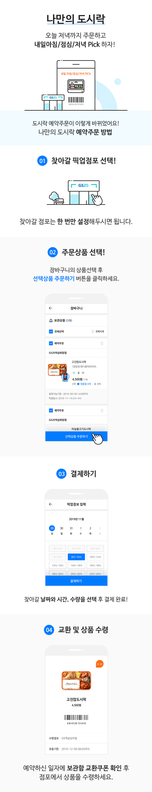

홈으로 이동
도시락 픽업가이드

유의사항
24시간 미 영업점/특수점 등 점포 사정으로 예약 주문 이용불가 매장은 조회되지 않습니다.
픽업 날짜 1일 전부터 구매 취소가 불가하며 여러 날짜/상품에 대해 부분 취소가 불가합니다.
상품 미/오출 등 본부 귀책으로 인한 보상은 GS&POINT로 지급됩니다.
상품별로 유통기한이 기재되어 있으며, 경과 후에는 상품 수령이 불가합니다.
고객의 사정으로 상품 미수령에 따른 환불은 불가합니다.
팝업 닫기